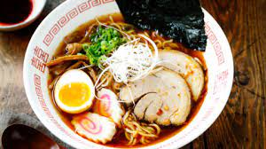

Ramen

Ramen is a Japanese noodle dish. It consists of Chinese-style wheat noodles (or 中華麺, chūkamen)
served in a broth; common flavors are soy sauce and miso, with typical toppings including sliced
pork (chāshū), nori (dried seaweed), menma (bamboo shoots), and scallions. Ramen has its roots
in Chinese noodle dishes.
Ingredients
- Ramen noodles
- Chicken or beef broth
- Soy sauce or miso paste
- Thinly sliced cooked chicken or beef
- Soft-boiled egg
- Green onions (optional)
Steps
- Cook the ramen noodles according to the package instructions.
- In a separate pot, heat the chicken or beef broth until it comes to a simmer.
- Add soy sauce or miso paste to the broth, adjusting to taste.
- Add thinly sliced cooked chicken or beef to the broth, and simmer for a few minutes until the meat is heated through.
- Place the cooked noodles in a bowl and pour the broth with the meat over them.
- Top with a soft-boiled egg and sliced green onions if desired.